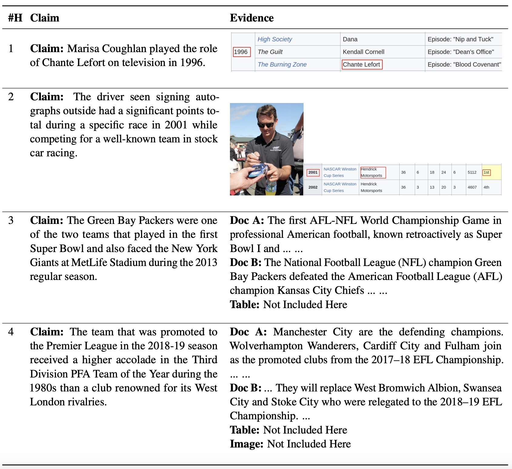

Recently, the rapid growth in AI-generated content has made it increasingly difficult for automated fact-checking systems to verify the accuracy of claims [1], especially when multimodal evidence is involved. This challenge is intensified by the development of diffusion models like DALL-E and Stable Diffusion, which can generate realistic images from textual prompts. Moreover, these claims often require multi-hop reasoning, where a sequence of interconnected evidence pieces leads to a final verdict on the claims' accuracy. Previous work [2] on multi-hop claim verification for text-only claims has shown that this process remains challenging for existing methods.
To address these challenges, we introduce MMCV, a new claim verification dataset featuring approximately 16,000 multi-hop claims paired with multimodal evidence. This dataset is derived from the MultimodalQA dataset [3] through a novel pipeline that leverages large language models (LLMs) for data annotation, enhanced with human feedback.
Here is an example of the 1-hop, 2-hop, 3-hop and 4-hop claims with multimodal evidence from MMCV.

For more details about HotpotQA or technical approaches we proposed to collect it, please refer to our paper.
References
[1] "Multimodal Automated Fact-Checking: A Survey ", Mandar Joshi, Mubashara Akhtar, Michael Schlichtkrull, Zhijiang Guo, Oana Cocarascu, Elena Simperl, Andreas Vlachos. Findings of EMNLP 2023.
[2] "HOVER: A Dataset for Many-Hop Fact Extraction And Claim Verification", Yichen Jiang, Shikha Bordia, Zheng Zhong, Charles Dognin, Maneesh Singh, Mohit Bansal. Findings of EMNLP 2020.
[3] "MultiModalQA: Complex Question Answering over Text, Tables and Images", Alon Talmor, Ori Yoran, Amnon Catav, Dan Lahav, Yizhong Wang, Akari Asai, Gabriel Ilharco, Hannaneh Hajishirzi, Jonathan Berant. ICLR 2021.